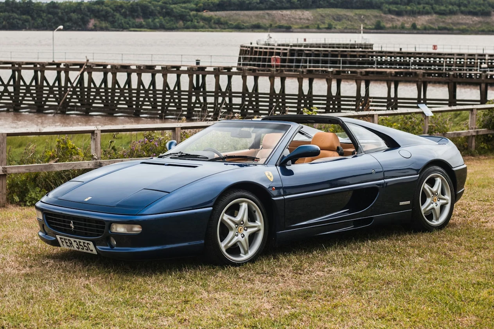
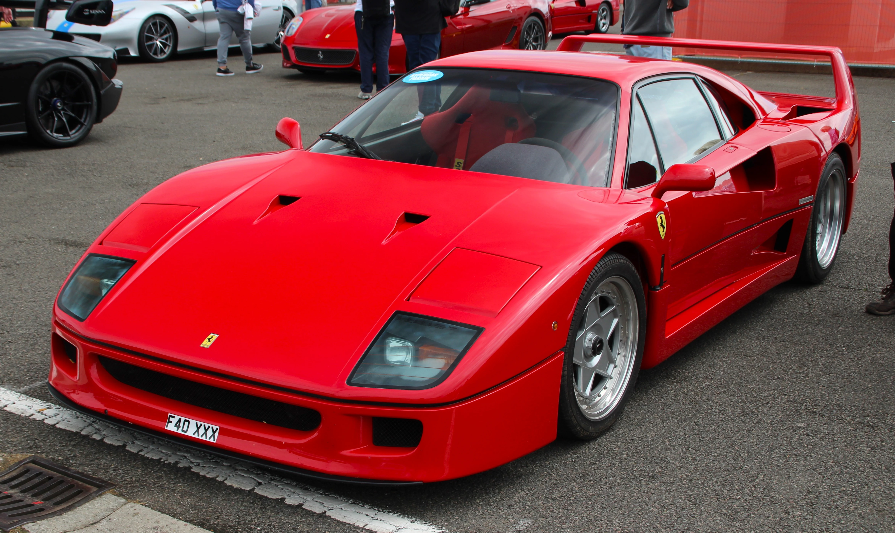
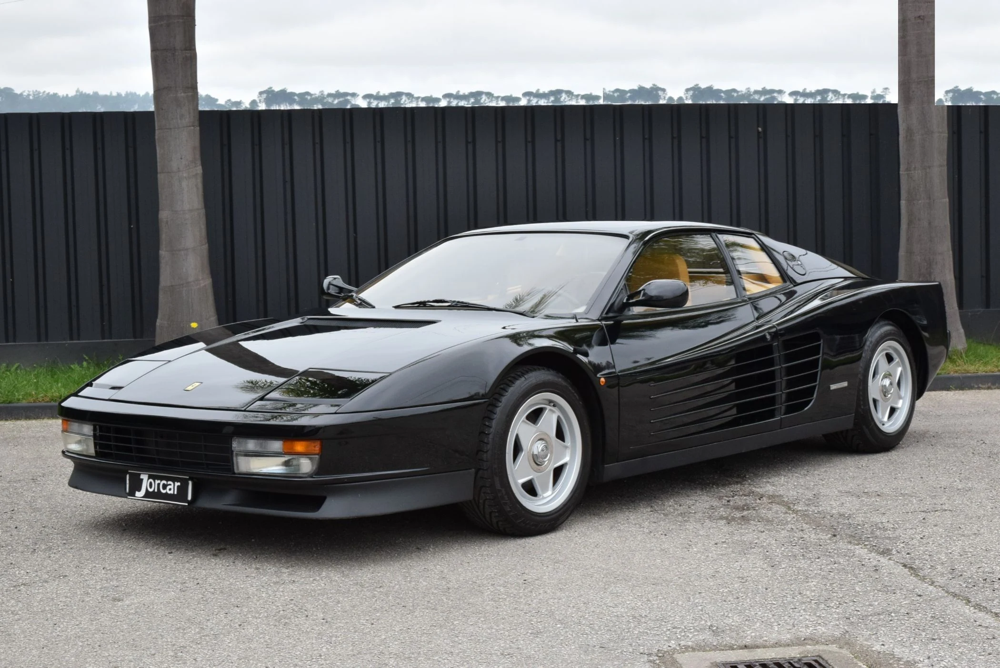
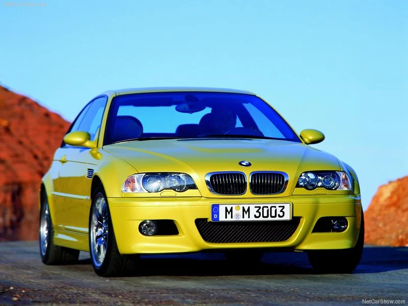
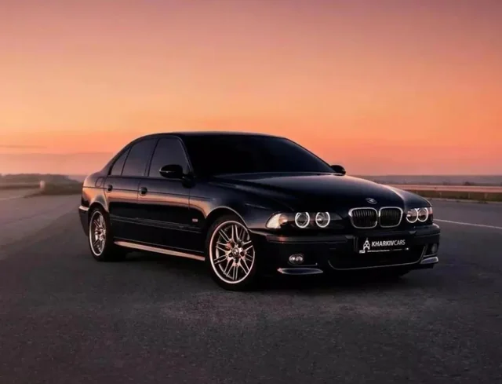
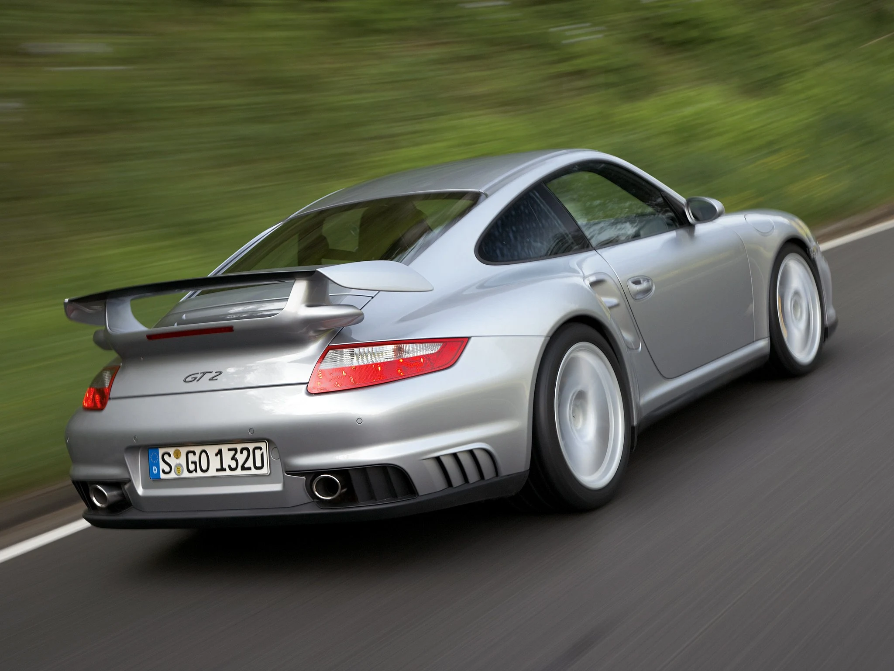

Registre manutenções, receba alertas e acompanhe o histórico completo da sua frota.
Começar agora

Minha relação com a engenharia não começou em uma tela de computador, mas no asfalto da Zona Norte de São Paulo. Aos 7 anos, vi uma Ferrari F430 estacionada e percebi que um carro é mais que transporte: é uma declaração de precisão. Este projeto é a convergência dessa paixão de infância com o rigor da Ciência da Computação, focado em devolver ao proprietário a soberania sobre sua própria máquina.

Acreditamos na eliminação do 'achismo' na manutenção. Inspirado pela eficiência econômica e pela robustez dos sistemas open-source, este software foi desenhado para ser uma ferramenta de controle técnico absoluto. Aqui, a telemetria das pistas encontra a gestão civil para garantir que a 'alma da máquina' seja preservada através de dados exatos.
Uma das mais belas Ferraris dos anos 90, nessa cor inconfundível do Tour de France.
O último Ferrari aprovado por Enzo. 478 cv, sem assistências, pura adrenalina.
Ícone dos anos 80 e 90. Design atemporal que ainda impressiona.

Engenharia alemã. Referência em condução esportiva dos anos 2000.

Sedã esportivo perfeito. Potência V8 em um pacote elegante e discreto.

O mais radical da geração 997. Traseiro, biturbo e sem concessões.
Programe manutenções por quilometragem ou data.
Todos os serviços e custos registrados por veículo.
Notificações para nunca perder uma revisão.
Gerencie toda a sua frota em uma conta.